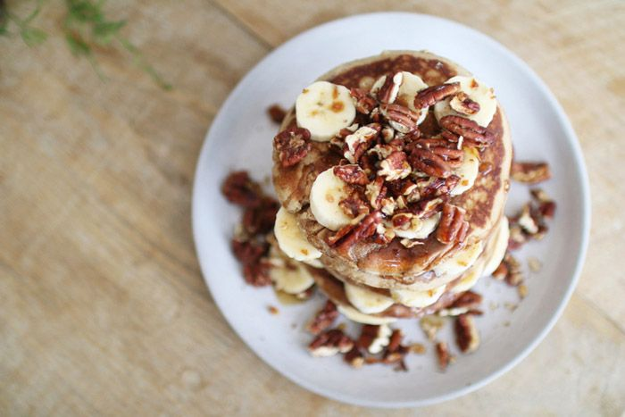
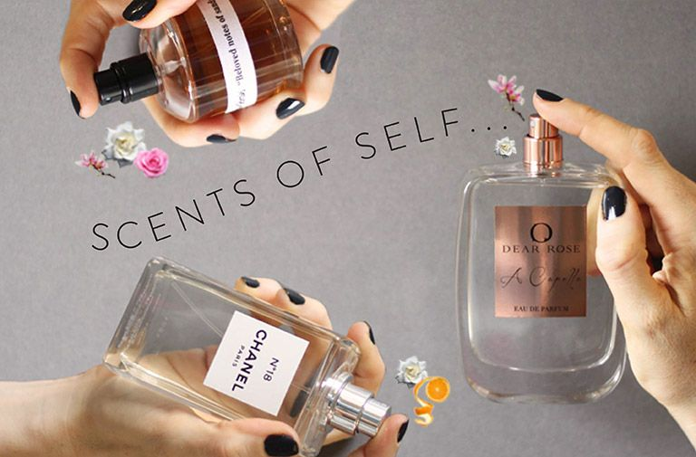
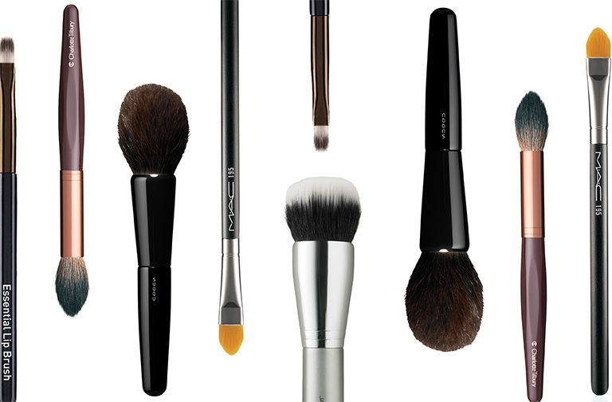
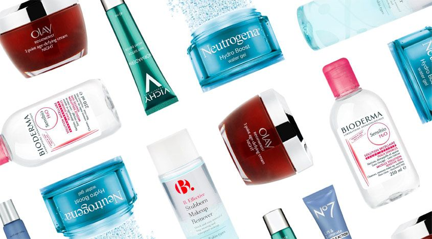

Tweets
- Tweets
- Tweets & replies
- Media
@GetTheGloss is blocked
Are you sure you want to view these Tweets? Viewing Tweets won't unblock @GetTheGloss.
-
10 inspirational women on how they organise their life... http://buff.ly/2mzwa5P pic.twitter.com/N7lhHxTyUs
-
The yoga mats yoga teachers swear by http://buff.ly/2mvcxfq
@yogamatters@yogataralee@triyogauk@Liforme@JadeYogahttp://buff.ly/2mClC54 -
Happy Pancake Day! Thanks
@FitnessFirstUK for the delicious delivery pic.twitter.com/zr8lKl2LWE
pic.twitter.com/zr8lKl2LWE
-
We're just going to leave the exclusive recipe for these pancakes, by the brilliant
@mind_body_bowl, right here http://buff.ly/2m6KOEk pic.twitter.com/DHQ0VLKh6m -
The beauty and fitness launches that have caught our eye this week, from
@MACcosmetics to@EsteeLauderUK http://buff.ly/2lfS3Fo pic.twitter.com/oV4ShTmaUs -
If Monday and PMS have come at once, here's a few ideas to make you feel better...http://buff.ly/2lXoHjs pic.twitter.com/fMzhU4HIM0
-
Clued up on cut crease eyeshadow? Here's your cheat sheet http://buff.ly/2lfMc2Z pic.twitter.com/gBNGVe3iLu
-
The secrets of Oscar worthy skin, from a derm in the know http://buff.ly/2lXpBMN pic.twitter.com/kC3xVcNBQI
-
Enter now for your chance to
#win the entire@AureliaSkincare range worth over £600! http://buff.ly/2lfGSgb ts&csapply#adpic.twitter.com/pn273zxvoo -
The 3310 is making a comeback, but is a Nokia still all it's cracked up to be?
@Ayesha_Muttu found out http://buff.ly/2lfScsB pic.twitter.com/kW8kW1LJdh -
The
#Oscars 2017: our top 5 beauty moments http://buff.ly/2l2TaNG pic.twitter.com/Wh6MgkX92t -
The secrets of Oscar-worthy skin -
@DrLancerRx shares all https://www.getthegloss.com/article/the-secrets-of-oscar-worthy-skin …#Oscarspic.twitter.com/ub00MbiLZO -
5 successful women and the bosses who inspire them https://www.getthegloss.com/behind-the-brand/my-best-boss-5-successful-women-pick-their-top-mentors …pic.twitter.com/hytefwv5jC
-
The new beauty and fitness finds we're besotted with... https://www.getthegloss.com/gallery/glossy-posse-picks-the-beauty-and-fitness-finds-we-re-besotted-with …pic.twitter.com/iGWZ2c4Iic
-
The lesser known fragrances that will blow your mind (looking at you
@JOLOVESofficial ,@andotherstories) http://buff.ly/2lB7qMn pic.twitter.com/PNda1w82DG -
After a new makeup brush? Don't go to the shops without reading this first http://buff.ly/2lhV0X9 pic.twitter.com/1Eztl3UNb4
 -
Decent skincare that doesn't cost the earth. You're welcome http://buff.ly/2l7V5vE pic.twitter.com/na8leyW48q
 -
Why winter is the perfect time to take up running. We're serious. http://buff.ly/2lB2p6l pic.twitter.com/Q4fxLLybNT
-
Cheesy pancakes from
@TomDaley1994 to gear up for Tuesday's blowout...http://buff.ly/2lAUoym pic.twitter.com/T1Jl98RifI -
Got lash extensions, or considering them?
@vdaxita has ALL the info http://buff.ly/2lMJ4Qi pic.twitter.com/50OW0PdBhh
Loading seems to be taking a while.
Twitter may be over capacity or experiencing a momentary hiccup. Try again or visit Twitter Status for more information.